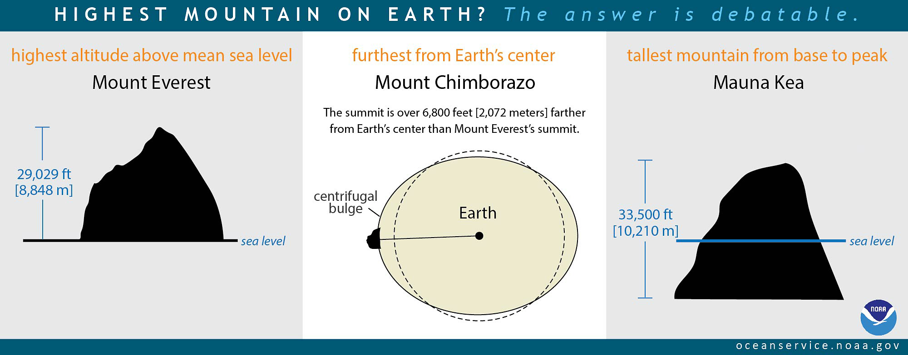

Koordinatenreferenzsysteme
Grundlagen: Vom GeoID zum Datum
graph LR
subgraph Erde[Die wahre Erde]
G[GeoID] --> E[Ellipsoid]
E --> D[Datum]
end
G --> G1["🥔 Mittlerer Meeresspiegel<br>Unregelmäßige Form"]
E --> E1["📐 Mathematische Annäherung<br>Rotationellipsoid"]
D --> D1["📍 Referenzpunkt<br>Lokale Anpassung"]
style G fill:#87CEEB,stroke:#333
style E fill:#90EE90,stroke:#333
style D fill:#FFD700,stroke:#333| Begriff | Beschreibung | Beispiel |
|---|---|---|
| GeoID | Äquipotentialfläche des Schwerefelds (mittlerer Meeresspiegel) | Unregelmäßige "Kartoffelform" |
| Ellipsoid | Mathematisch definierte Annäherung an das GeoID | Rotationsellipsoid |
| Datum | Festlegung des Ellipsoids relativ zur Erde | WGS84, ETRS89 |
🧠 Trivia: Der höchste Berg der Erde? (Zum Aufklappen)
Chimborazo vs. Everest – Wer ist wirklich höher?
graph TD
subgraph Chimborazo[Chimborazo, Ecuador]
C["6.268 m<br>ü.M."]
C1["🌎 6.384 km vom Erdmittelpunkt"]
end
subgraph Everest[Mount Everest]
E["8.848 m<br>ü.M."]
E1["🌎 6.382 km vom Erdmittelpunkt"]
end
C --> Fakt["🏆 Chimborazo ist der höchste Punkt<br>vom Erdmittelpunkt aus gemessen!"]
E --> Fakt
Fakt --> Grund["Warum? Die Erde ist keine Kugel:<br>Äquatorwölbung durch Rotation"]
style Chimborazo fill:#e1f5fe,stroke:#333
style Everest fill:#fff3e0,stroke:#333
style Fakt fill:#ffeb3b,stroke:#333,stroke-width:2px
DatenquelleGeographische vs. Projizierte Koordinatensysteme
| Merkmal | 🌐 Geographisch | 📏 Projiziert |
|---|---|---|
| Einheit | Grad (°) | Meter (m) |
| Oberfläche | Kugel/Ellipsoid | Ebene (Karte) |
| Verzerrung | Winkel treu (flächenverzerrt) | Fläche treu (winkelverzerrt) |
| Beispiel | WGS84 (Lat/Lon) | UTM, Gauss-Krüger |
| Einsatz | GPS, globale Daten | Kataster, Navigation vor Ort |
graph LR
subgraph Erde[🌍 Die runde Erde]
direction TB
P1[Punkt A<br>50°N, 10°O]
P2[Punkt B<br>52°N, 12°O]
end
subgraph Karte[🗺️ Die flache Karte]
direction TB
K1[X: 350000, Y: 5540000]
K2[X: 420000, Y: 5760000]
end
Erde -- "Projektion" --> Karte
Karte -- "Rückrechnung" --> Erde
style Erde fill:#87CEEB,stroke:#333
style Karte fill:#f5f5f5,stroke:#333Kartenprojektionen
mindmap
root((Kartenprojektionen))
Zylinderprojektion
Mercator
UTM
Web Mercator
:::wichtig
Kegelprojektion
Lambert
Albers
:::regional
Azimutalprojektion
Gnomonisch
Stereografisch
:::polar
Sonstige
Trapez
Sinusoidal
:::themaDie wichtigsten Projektionen im Überblick
| Projektion | Typ | Eigenschaft | Einsatz |
|---|---|---|---|
| Mercator | Zylinder | Winkeltreu | Seefahrt (historisch) |
| Web Mercator (EPSG:3857) | Zylinder | Winkeltreu | Google Maps, OpenStreetMap |
| UTM (EPSG:32633-etc.) | Zylinder | Winkeltreu, streifenförmig | Topografische Karten weltweit |
| Gauß-Krüger (EPSG:31466-31469) | Zylinder | Winkeltreu | Historisches DE-System (3°-Streifen) |
Was ist ein EPSG-Code?
graph TD
subgraph EPSG[EPSG-Code]
E1[European Petroleum Survey Group]
E2[Nummerischer Code = einmalige ID]
E3[Weltweiter Standard]
end
EPSG --> Beispiele
subgraph Beispiele[Wichtige Codes]
WGS84["EPSG:4326<br>🌐 Geographisch (Lat/Lon)"]
WebM["EPSG:3857<br>🗺️ Web Mercator"]
GK4["EPSG:31468<br>📏 Gauß-Krüger Zone 4"]
UTM32["EPSG:32632<br>📏 UTM Zone 32N"]
end
style EPSG fill:#bbdefb,stroke:#333,stroke-width:2px
style Beispiele fill:#e1f5fe,stroke:#333EPSG-Codes sind eindeutige Nummern für Koordinatenreferenzsysteme.
Z.B. bedeutet EPSG:4326 = WGS84 (geographisch, Grad)
EPSG:3857 = Web Mercator (für Google Maps, OSM)
Koordinatensysteme in Deutschland
Früher (historisch)
timeline
title Historische Systeme in Deutschland
Vor 1945 : Verschiedene Landessysteme<br>Preußen, Bayern, etc.
1923 : Einführung Gauß-Krüger<br>Bessel-Ellipsoid
Bis 1990er : Gauß-Krüger<br>in 3°-Streifen
Nach Wende : Übergang zu UTM/ETRS89| System | EPSG | Ellipsoid | Streifen | Einsatz |
|---|---|---|---|---|
| Gauß-Krüger Zone 2 | EPSG:31466 | Bessel 1841 | 6° (historisch) | Westdeutschland |
| Gauß-Krüger Zone 3 | EPSG:31467 | Bessel 1841 | 9° | West-/Mitteldeutschland |
| Gauß-Krüger Zone 4 | EPSG:31468 | Bessel 1841 | 12° | Ostdeutschland |
| Gauß-Krüger Zone 5 | EPSG:31469 | Bessel 1841 | 15° | Sachsen |
Heute (aktuell)
graph TB
subgraph Aktuell[Aktuelle Systeme in Deutschland]
ETRS89[ETRS89<br>Europäisches Referenzsystem]
subgraph UTM[UTM Zone 32N & 33N]
U32["EPSG:25832<br>UTM 32N (West)"]
U33["EPSG:25833<br>UTM 33N (Ost)"]
end
subgraph Web[Web-Standards]
WGS84["EPSG:4326<br>Für GPS"]
WebMerc["EPSG:3857<br>Für Webkarten"]
end
ETRS89 --> UTM
ETRS89 --> Web
end
style Aktuell fill:#e8f5e8,stroke:#333,stroke-width:2px
style UTM fill:#c8e6c9,stroke:#333
style Web fill:#b3e5fc,stroke:#333| System | EPSG | Beschreibung | Verwendung |
|---|---|---|---|
| ETRS89 / UTM 32N | EPSG:25832 | Offizielles System Westdeutschland | Behörden, Kataster (westl. BRD) |
| ETRS89 / UTM 33N | EPSG:25833 | Offizielles System Ostdeutschland | Behörden, Kataster (östl. BRD) |
| WGS 84 | EPSG:4326 | Globales geographisches System | GPS, Smartphones |
| Web Mercator | EPSG:3857 | Für Webkarten optimiert | Google Maps, OSM |
Zusammenfassung
graph LR
A[🌍 Erde] --> B[📐 Ellipsoid]
B --> C[📍 Datum]
C --> D[🌐 Geographisch<br>Grad]
D --> E[📏 Projiziert<br>Meter]
D --> F["EPSG:4326 (WGS84)"]
E --> G["EPSG:25832 (UTM 32N)"]
E --> H["EPSG:3857 (Web Mercator)"]
style A fill:#87CEEB
style B fill:#90EE90
style C fill:#FFD700
style D fill:#ffb74d
style E fill:#4fc3f7